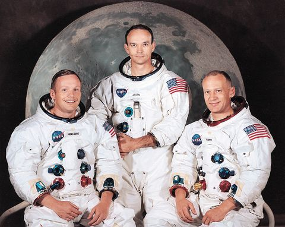
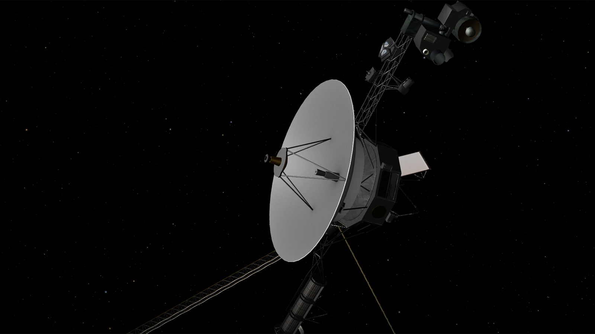
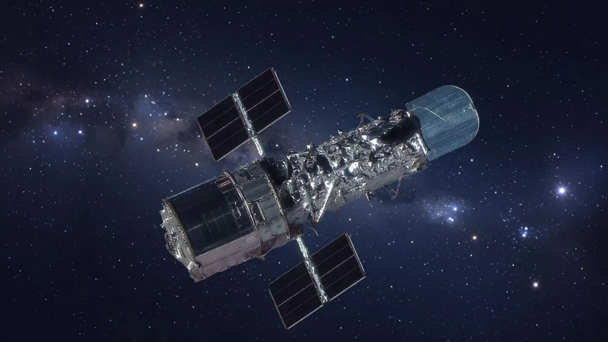
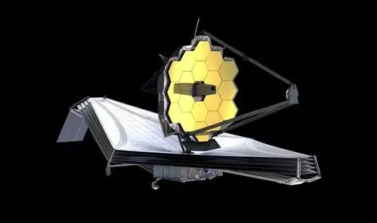

Four missions that matters.
Each one pushed the boundary of where humans, or our machines, had been — from the first footprint on another world to a telescope looking back almost to the beginning of time. Ordered by launch date.
Apollo 11
The mission that landed Neil Armstrong and Buzz Aldrin on the Moon while Michael Collins orbited above. It proved, for the first time, that humans could leave Earth, walk on another world, and return safely — a goal the United States had committed to just eight years earlier.

Voyager 1
Launched to study Jupiter and Saturn up close, Voyager 1 kept going long after its primary mission ended. In 2012 it became the first human-made object to enter interstellar space, and it is still sending data back from billions of kilometres away.

Hubble Space Telescope
Orbiting above Earth's distorting atmosphere, Hubble has spent more than three decades capturing some of the sharpest images ever taken of distant galaxies, nebulae, and planets — reshaping how the public pictures the universe.

James Webb Space Telescope
Hubble's infrared successor, positioned far beyond the Moon at the second Lagrange point. Its larger mirror and infrared instruments let it see through cosmic dust to galaxies formed in the universe's first few hundred million years.
